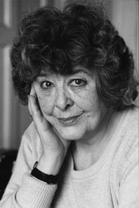
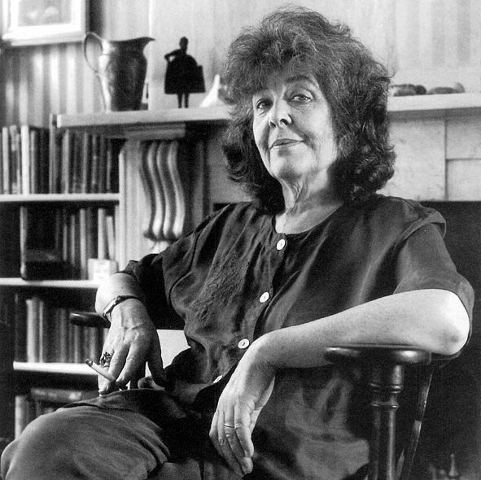

Diana Wynne Jones (16 August 1934 – 26 March 2011)was a British novelist, poet, academic, literary critic, and short story writer.
She principally wrote fantasy and speculative fiction novels for children and young adults. Although usually described as fantasy, some of her work also incorporates science fiction themes and elements of realism. Jones's work often explores themes of time travel and parallel or multiple universes. Some of her better-known works are the Chrestomanci series, the Dalemark series, the three Moving Castle novels, Dark Lord of Derkholm, and The Tough Guide to Fantasyland.
Jones has been cited as an inspiration and muse for several fantasy and science fiction authors including Philip Pullman, Terry Pratchett, Penelope Lively, Robin McKinley, Dina Rabinovitch, Megan Whalen Turner, J.K. Rowling and Neil Gaiman, with Gaiman describing her as "quite simply the best writer for children of her generation".Her work has been nominated for several awards. She was twice a finalist for the Hugo Award, nominated fourteen times for the Locus Award, seven times for the Mythopoeic Award (which she won twice), twice for a British Fantasy Award (won in 1999), and twice for a World Fantasy Award, which she won in 2007.
Jones was the oldest of three sisters and often looked after her siblings—partly because of a complicated relationship with their parents, who were both teachers. Despite struggling with dyslexia, she did well in school as a child and developed a keen interest in books, reading works such as The Thousand and One Nights and Sir Thomas Malory’s Le Morte Darthur at a young age. Jones decided early that she wanted to become a writer, and when she was 13 years old she began writing stories for her sisters.
In 1953 Jones entered St. Anne’s College, Oxford, where she studied English (B.A., 1956) and attended lectures by renowned authors C.S. Lewis and J.R.R. Tolkien. In 1956 Jones married John Burrow, with whom she had three sons. She read books with her children as they were growing up, which served as an introduction to the world of children’s literature—of which Jones had read little in her own childhood. During this time she submitted a few of her works to publishers and agents, but they were rejected. Though the majority of her books were written for children, Jones’s first published novel, Changeover (1970), was intended for adults. Despite having penned the novel in 1966, Jones did not embark on her writing career in earnest until all her children were in school.
After being introduced to a literary agent, Jones went on to write Wilkins’ Tooth (1973; also published as Witch’s Business), Eight Days of Luke (1975), The Ogre Downstairs (1974), and dozens more over the next several decades. Many of her books feature magic or magicians. Among the most famous are The Chronicles of Chrestomanci series and Howl’s Moving Castle (1986)—the latter of which was made into a successful animated film by Japanese director Miyazaki Hayao in 2004. Another of her works, The Tough Guide to Fantasyland (1996; revised 2006), serves as a humorous exploration of the clichés of her favoured genre. Jones was the recipient of many honours and awards, including a World Fantasy Award for lifetime achievement in 2007.